JD-GUI vs CFR vs Procyon vs Jadx
对于同一个jar包：com.huili.readingclub.jar
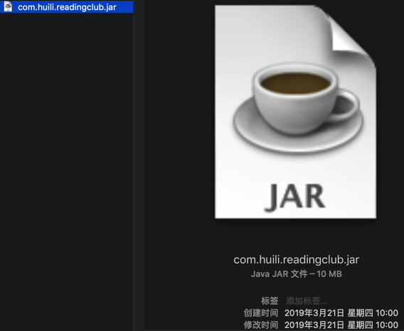
用不同工具：
- JD-GUI
- CFR
- Procyon
- Jadx
去导出java源代码后，转换导出的效果，尤其是准确性，是否出错，是不一样的。
转换的细节是否完美
jd-gui的细节不够好的地方：
static函数：
static
{
lock = new ReentrantLock();
}
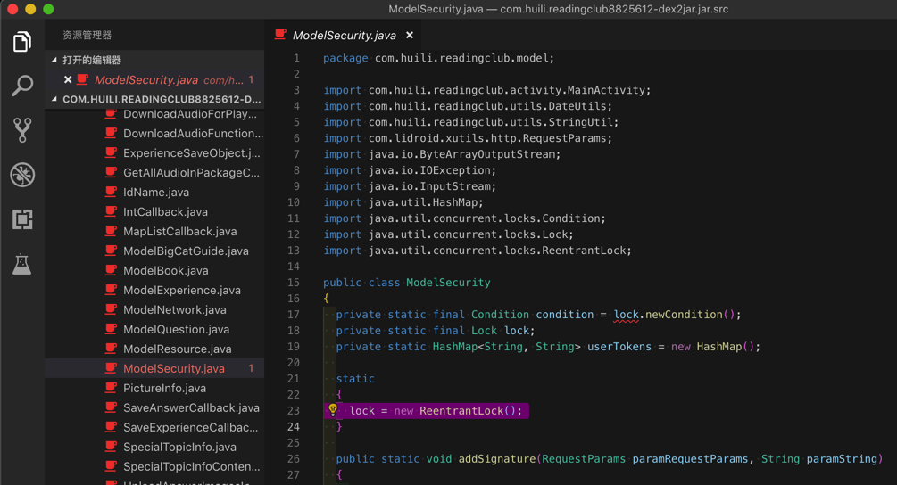
而CFR、Procyon、Jadx转换结果可以更完整：
CFR的：
static {
userTokens = new HashMap();
lock = new ReentrantLock();
condition = lock.newCondition();
}
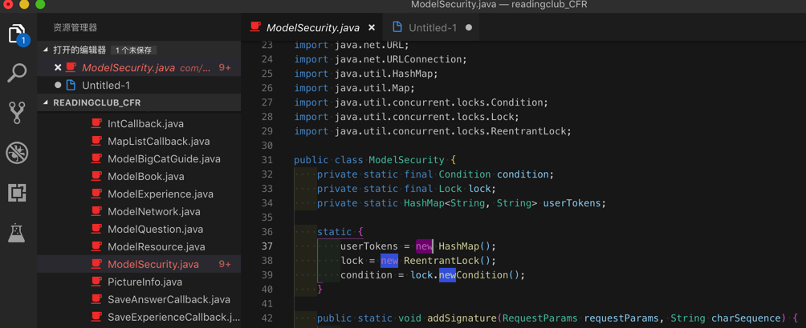
Procyon
static {
ModelSecurity.userTokens = new HashMap<String, String>();
lock = new ReentrantLock();
condition = ModelSecurity.lock.newCondition();
}
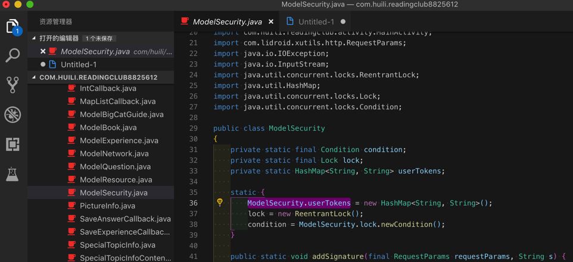
Jadx
public class ModelSecurity {
private static final Condition condition = lock.newCondition();
private static final Lock lock = new ReentrantLock();
private static HashMap<String, String> userTokens = new HashMap();
}
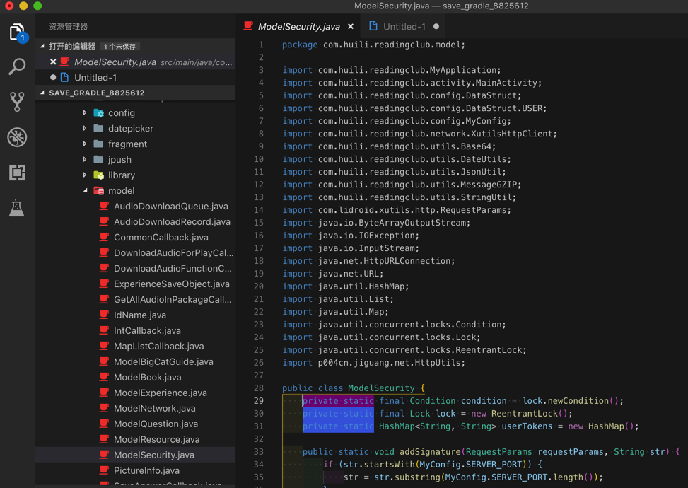
很明显从：
- CFR的：
userTokens = new HashMap(); - Procyon的：
ModelSecurity.userTokens = new HashMap<String, String>(); - Jadx的：
private static HashMap<String, String> userTokens = new HashMap();
可以看出：
Procyon能识别static变量，细节转换的很完美和精确- 而
Jadx：更进一步识别出是private的static类型的变量，更加准确。
对于细节转换的结论：
JD-GUI：细节不够好CFR：细节基本满足要求Procyon：细节完美转换Jadx：不仅完美且代码变量和结构更合理
转换是否出错及代码逻辑清晰度
getToken函数转换效果
比如：com.huili.readingclub.model.ModelSecurity的getToken
JD-GUI某函数转换报错得不到源码
都是错误代码：
/* Error */
private static String getToken(String paramString)
{
// Byte code:
// 0: aload_0
// 1: invokestatic 81 com/huili/readingclub/utils/StringUtil:isNullOrEmpty (Ljava/lang/String;)Z
// 4: ifeq +5 -> 9
// 7: aconst_null
// 8: areturn
// 9: aload_0
// 10: invokestatic 87 java/lang/Integer:parseInt (Ljava/lang/String;)I
// 13: iconst_1
// 14: if_icmpge +5 -> 19
// 17: aconst_null
// 18: areturn
// 19: getstatic 22 com/huili/readingclub/model/ModelSecurity:userTokens Ljava/util/HashMap;
// 22: aload_0
......
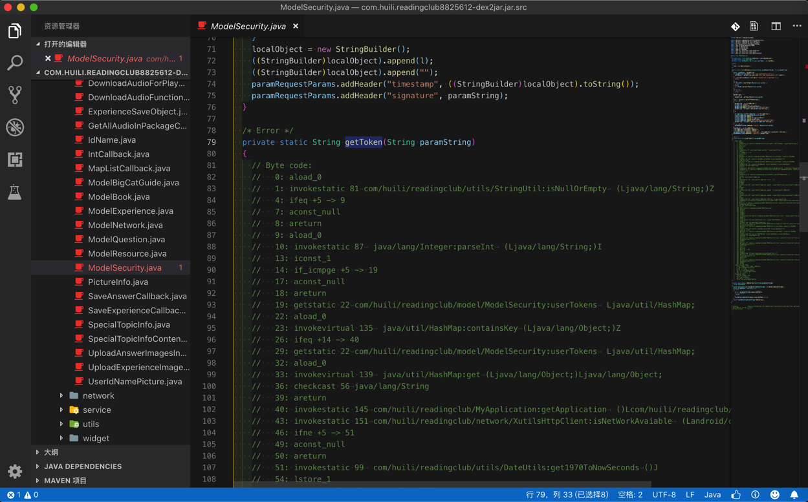
CFR某函数转换报错但有源码
转换报错：
summary.txt
com.huili.readingclub.model.ModelSecurity
----------------------------
getToken(java.lang.String )
Loose catch block
run()
Loose catch block
代码中有报错：
/*
* WARNING - Removed back jump from a try to a catch block - possible behaviour change.
* Loose catch block
* Enabled aggressive block sorting
* Enabled unnecessary exception pruning
* Enabled aggressive exception aggregation
* Lifted jumps to return sites
*/
private static String getToken(final String string2) {
......
lock.lock();
Runnable runnable = new Runnable((String)charSequence){
......
/*
* WARNING - Removed back jump from a try to a catch block - possible behaviour change.
* Loose catch block
* Enabled aggressive block sorting
* Enabled unnecessary exception pruning
* Enabled aggressive exception aggregation
* Lifted jumps to return sites
*/
@Override
public void run() {
Throwable throwable2222;
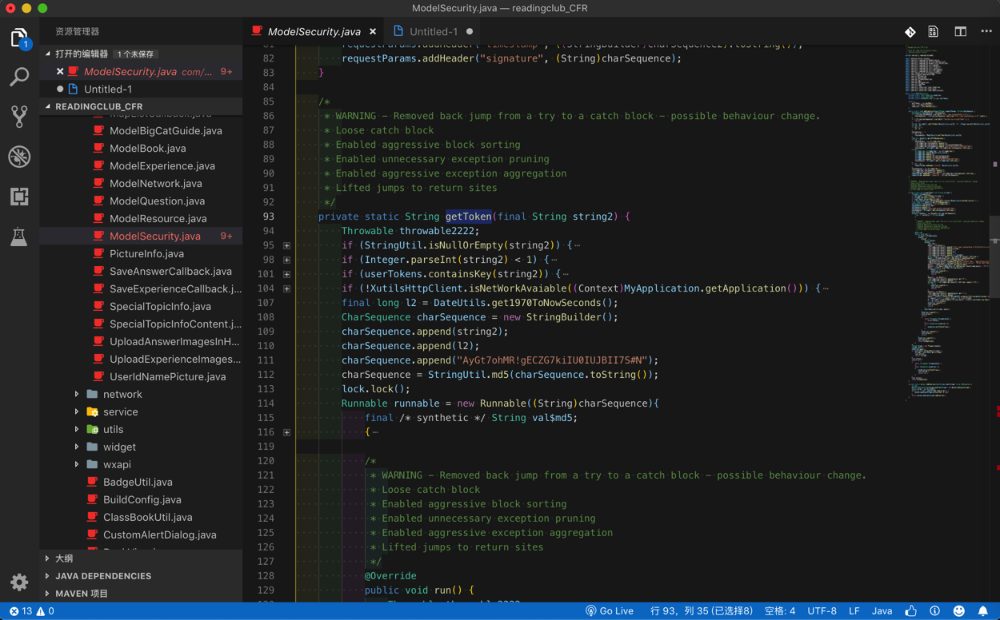
Procyon某函数完美转换无错误：
//
// Decompiled by Procyon v0.5.34
//
private static String getToken(String s) {
if (StringUtil.isNullOrEmpty(s)) {
return null;
}
...
sb.append("AyGt7ohMR!gECZG7kiIU0IUJBII7S#N");
ModelSecurity.lock.lock();
try {
try {
new Thread(new Runnable() {
@Override
public void run() {
ModelSecurity.lock.lock();
try {
try {
final StringBuilder sb = new StringBuilder();
...
sb.append("/");
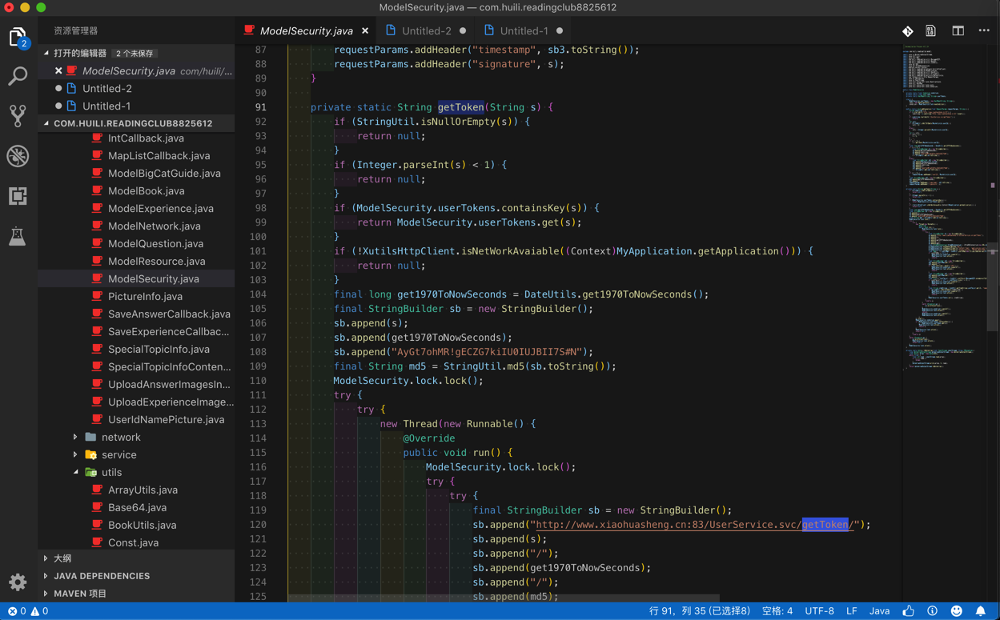
Jadx某函数完美转换外，还保持代码变量和结构更合理 -> 能识别常量定义和引用
private static String getToken(final String str) {
if (StringUtil.isNullOrEmpty(str) || Integer.parseInt(str) < 1) {
return null;
}
......
stringBuilder.append(MyConfig.SECRET_KEY);
final String md5 = StringUtil.md5(stringBuilder.toString());
lock.lock();
try {
new Thread(new Runnable() {
public void run() {
ModelSecurity.lock.lock();
try {
StringBuilder stringBuilder = new StringBuilder();
...
stringBuilder.append(HttpUtils.PATHS_SEPARATOR);
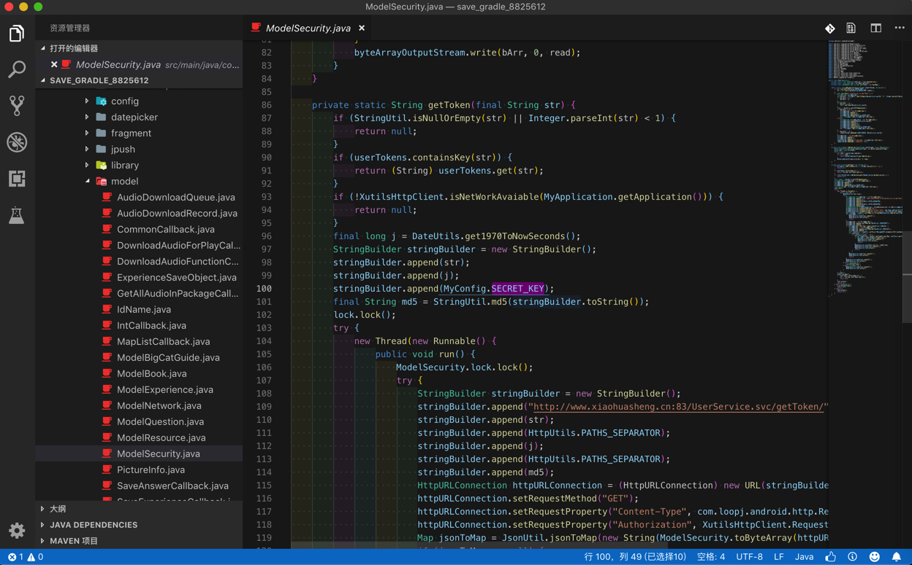
其中包括stringBuilder.append的参数是
常量定义MyConfig.SECRET_KEY
而不是之前代码的常量的值：
"AyGt7ohMR!gECZG7kiIU0IUJBII7S#N"
getMD5Str的char的list转换效果
另外，再去对比：
Jadx导出的代码的逻辑和结构，非常清晰：
char的list很清楚，以及赋值语句：
cArr2[i] = cArr[(b >> 4) & 15];
也容易看懂
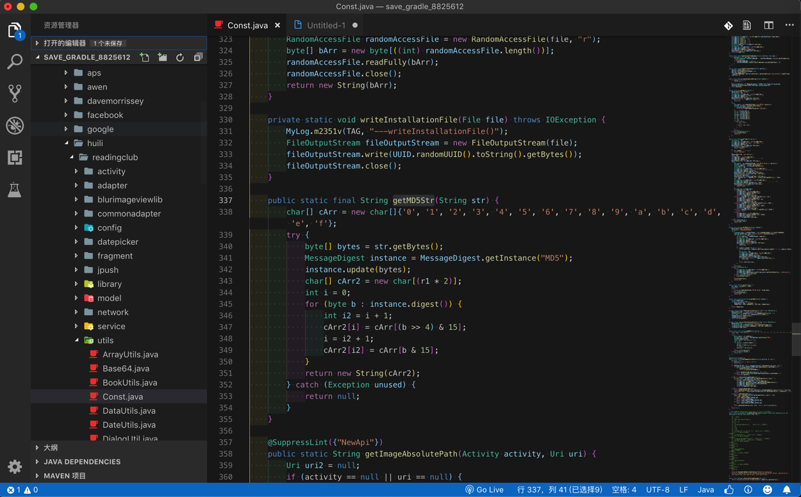
public static final String getMD5Str(String str) {
char[] cArr = new char[]{'0', '1', '2', '3', '4', '5', '6', '7', '8', '9', 'a', 'b', 'c', 'd', 'e', 'f'};
try {
byte[] bytes = str.getBytes();
MessageDigest instance = MessageDigest.getInstance("MD5");
instance.update(bytes);
char[] cArr2 = new char[(r1 * 2)];
int i = 0;
for (byte b : instance.digest()) {
int i2 = i + 1;
cArr2[i] = cArr[(b >> 4) & 15];
i = i2 + 1;
cArr2[i2] = cArr[b & 15];
}
return new String(cArr2);
} catch (Exception unused) {
return null;
}
}
而不是像：
Procyon（的Luyten）的代码：
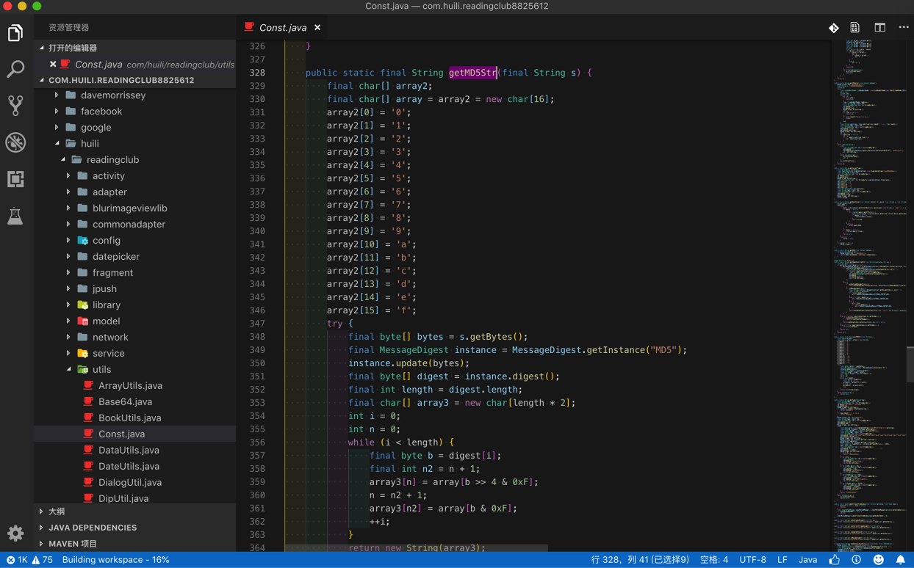
public static final String getMD5Str(final String s) {
final char[] array2;
final char[] array = array2 = new char[16];
array2[0] = '0';
array2[1] = '1';
array2[2] = '2';
array2[3] = '3';
array2[4] = '4';
array2[5] = '5';
array2[6] = '6';
array2[7] = '7';
array2[8] = '8';
array2[9] = '9';
array2[10] = 'a';
array2[11] = 'b';
array2[12] = 'c';
array2[13] = 'd';
array2[14] = 'e';
array2[15] = 'f';
try {
final byte[] bytes = s.getBytes();
final MessageDigest instance = MessageDigest.getInstance("MD5");
instance.update(bytes);
final byte[] digest = instance.digest();
final int length = digest.length;
final char[] array3 = new char[length * 2];
int i = 0;
int n = 0;
while (i < length) {
final byte b = digest[i];
final int n2 = n + 1;
array3[n] = array[b >> 4 & 0xF];
n = n2 + 1;
array3[n2] = array[b & 0xF];
++i;
}
return new String(array3);
}
catch (Exception ex) {
return null;
}
}
作为一个char的list，还是没有清晰的表达出来
更不像是CFR的：
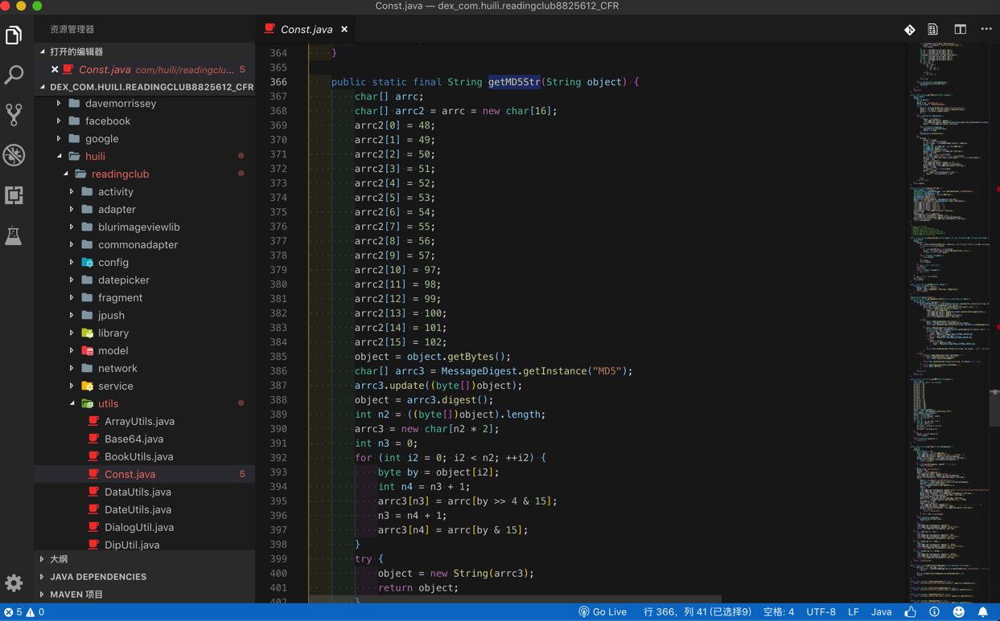
public static final String getMD5Str(String object) {
char[] arrc;
char[] arrc2 = arrc = new char[16];
arrc2[0] = 48;
arrc2[1] = 49;
arrc2[2] = 50;
arrc2[3] = 51;
arrc2[4] = 52;
arrc2[5] = 53;
arrc2[6] = 54;
arrc2[7] = 55;
arrc2[8] = 56;
arrc2[9] = 57;
arrc2[10] = 97;
arrc2[11] = 98;
arrc2[12] = 99;
arrc2[13] = 100;
arrc2[14] = 101;
arrc2[15] = 102;
object = object.getBytes();
char[] arrc3 = MessageDigest.getInstance("MD5");
arrc3.update((byte[])object);
object = arrc3.digest();
int n2 = ((byte[])object).length;
arrc3 = new char[n2 * 2];
int n3 = 0;
for (int i2 = 0; i2 < n2; ++i2) {
byte by = object[i2];
int n4 = n3 + 1;
arrc3[n3] = arrc[by >> 4 & 15];
n3 = n4 + 1;
arrc3[n4] = arrc[by & 15];
}
try {
object = new String(arrc3);
return object;
}
catch (Exception exception) {
return null;
}
}
连char的list都不够明显，只是char的int数值。
更更不像是JD-GUI导出的源码：
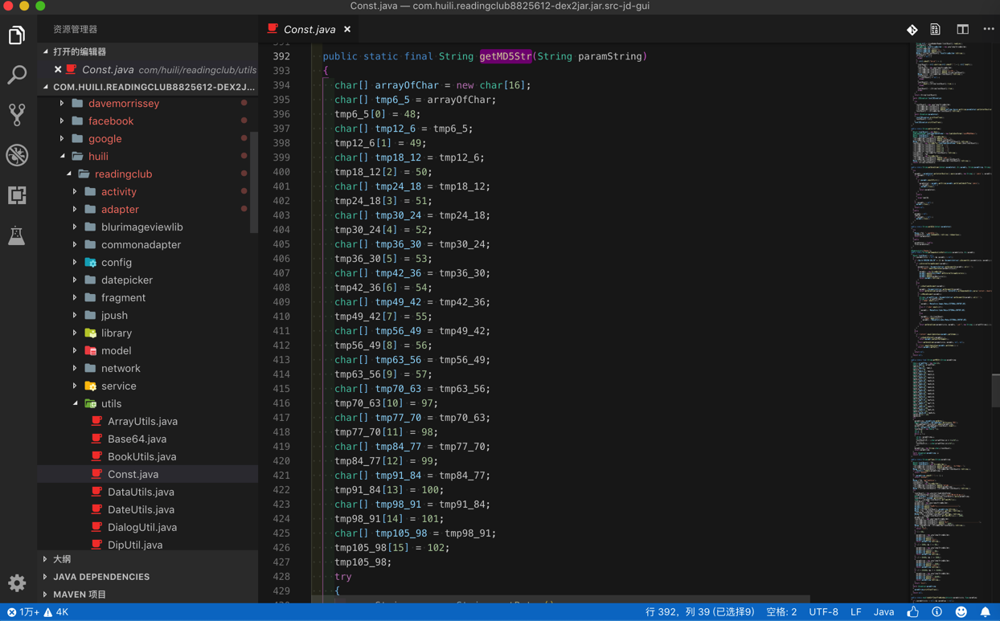
public static final String getMD5Str(String paramString)
{
char[] arrayOfChar = new char[16];
char[] tmp6_5 = arrayOfChar;
tmp6_5[0] = 48;
char[] tmp12_6 = tmp6_5;
tmp12_6[1] = 49;
char[] tmp18_12 = tmp12_6;
tmp18_12[2] = 50;
char[] tmp24_18 = tmp18_12;
tmp24_18[3] = 51;
char[] tmp30_24 = tmp24_18;
tmp30_24[4] = 52;
char[] tmp36_30 = tmp30_24;
tmp36_30[5] = 53;
char[] tmp42_36 = tmp36_30;
tmp42_36[6] = 54;
char[] tmp49_42 = tmp42_36;
tmp49_42[7] = 55;
char[] tmp56_49 = tmp49_42;
tmp56_49[8] = 56;
char[] tmp63_56 = tmp56_49;
tmp63_56[9] = 57;
char[] tmp70_63 = tmp63_56;
tmp70_63[10] = 97;
char[] tmp77_70 = tmp70_63;
tmp77_70[11] = 98;
char[] tmp84_77 = tmp77_70;
tmp84_77[12] = 99;
char[] tmp91_84 = tmp84_77;
tmp91_84[13] = 100;
char[] tmp98_91 = tmp91_84;
tmp98_91[14] = 101;
char[] tmp105_98 = tmp98_91;
tmp105_98[15] = 102;
tmp105_98;
try
{
paramString = paramString.getBytes();
Object localObject = MessageDigest.getInstance("MD5");
((MessageDigest)localObject).update(paramString);
paramString = ((MessageDigest)localObject).digest();
int i = paramString.length;
localObject = new char[i * 2];
int j = 0;
int k = 0;
while (j < i)
{
int m = paramString[j];
int n = k + 1;
localObject[k] = ((char)arrayOfChar[(m >> 4 & 0xF)]);
k = n + 1;
localObject[n] = ((char)arrayOfChar[(m & 0xF)]);
j++;
}
paramString = new String((char[])localObject);
return paramString;
}
catch (Exception paramString) {}
return null;
}
连char的list不仅不够明显，不仅只是char的int数值，而且还有多余的赋值，影响代码逻辑的理解，以及对应的数据赋值：
localObject[k] = ((char)arrayOfChar[(m >> 4 & 0xF)]);
都很晦涩难懂。
对于几种反编译抓换代码的出错程度和代码逻辑是否完美的结论是
JD-GUI：某函数转换报错得不到源码CFR：某函数转换报错但有源码Procyon：某函数完美转换无错误Jadx：某函数完美转换外还能识别常量定义和代码结构更清晰